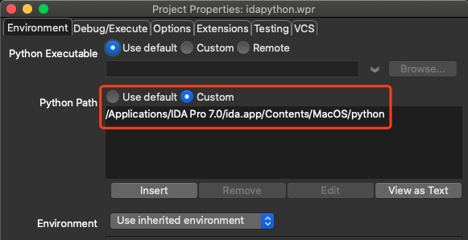

IDA Pro是一款静态反汇编的利器，具有良好的交互性、可编程性、可扩展性及对多处理器的支持。
对于IDA Pro的可扩展性表现在两个方面，一是采用内置的脚本语言IDC写脚本；二是采用Hex-rays提供的SDK写插件Plug-in（具体表现为plw、p64插件或者IDAPython插件）。
IDC可以快速解决一些简单的问题，但是对于复杂的问题，就有点力不从心了。IDA SDK包文档过少，而且在调试相关的API，BUG比较多，使用比较难受，相比于起来，IDAPython可以调用IDC和IDA SDK包的所有函数，而且文档资料丰富。
简单的任务交由脚本完成，复杂的任务则需要定制满足需求的插件
0、先介绍一下IDA插件历史：
来自（https://reverseengineering.stackovernet.com/cn/q/3050）
问题：
In IDA’s documentation, there are references to modules named ida_*, as well as idc, idaapi and idautils. The former modules seem to be the lower level ones. Almost always it says that IDA Plugin SDK API wrapper:
I have a few specific questions about the documentation and IDAPython:
1.What is this IDA plugin SDK? Is it the C like API available in IDC?
2.Do the higher level API allow access to all the lower level functionalities?
3.What can’t I seem to load lower level modules? (When I try to import ida_lines, IDA says ImportError: No module named ida_lines)
回答：
A bit of history: (aka an aging guy blabbering about)
In the old days, we didn’t have python in IDA and when an individual wanted to develop an IDA plugin he had to implement it in C and use the SDK available from hex-ray’s download center using credentials received when you purchase an IDA license. We did have, however, IDC. IDC is IDA’s old, proprietary and somewhat deprecated scripting language, this is not related to C however there is evident effort using a C-like syntax. It was commonly used in the past but IDAPython nearly replaced it completely. The only reason to see IDC now is for old code, that precedes IDAPython.
Since then, IDAPython was developed (originally as a plugin using the aforementioned SDK, and then adopted by hex-rays and made part of IDA). Up until the recent IDA 6.95, we only had a single module exposing all of IDA’s C SDK in python. That module was idaapi. idc is implementing higher level functions that were migrated from IDC into IDAPython. idautils implements some more high level functions, that weren’t there before. those are rough divisions, and not entirely accurate. The important point here is that there was a single (long) python file exposing all SDK functions (that are exposed to python using SWIG).
In IDA 6.95 we still have that, but it was also the first version to include multiple ida_* modules where are to replace the broad idaapi. idaapi is only included in 6.95 for backwards compatibility and should be expected to be dropped in IDA 7. Generally, the names of the modules (what follows the ida_ prefix) are the names of the header files in which those functions are defined. For example, ida_lines will expose functions defined in lines.h.
Actual answers:
1.The IDA plugin SDK is a collection of C header files and binary libraries that allow a third party develop IDA plugins using the provided API. It can be downloaded from the download center and it’s documentation is available here.
2.While the C SDK is pretty well documented, the IDAPython not so much. I often find browsing the SDK useful when developing IDAPython plugins, as functions are usually exposed to python but not documented or described as well as they are in the SDK. basically most of the functions correspond and you’ll find the same functions having the same name in both IDAPython and the SDK (as this is mostly automatically generated code by/for SWIG).
3.First guess would be you’re using an older version of IDA, where ida_* modules don’t yet exist. generally, using idaapi instead of every other module will do just fine.
Developing for IDA:
A person interested in developing for IDA has three options:
1.Writing C code using the IDA SDK and compiling it, having a plw or a p64 binary as output.
2.Writing IDC code. This is a decent scripting language recembling a simplified C in syntax. output would be a text file.
3.Writing IDAPython code. This is mostly python using the additional modules available when running from within IDA, plus a simple IDA plugin interface required to register as a plugin.
1、idapython模块简单介绍
idapython的主要模块为“idaapi.py”、“idautils.py”、“idc.py”。
- idaapi.py: 负责访问核心IDA API。
- idautils.py: 提供大量的使用函数。
- idc.py: 负责提供IDC中所有函数的功能。
以上模块在ida运行时使用内部python插件运行(IDAPython脚本会自动导入idc和idautils模块,idaapi模块,需要显式手动导入)。
但是这几个模块在不使用ida上下文，单独编写idapython脚本时，是无法使用的，会提示找不到模块。
2、使用ide单独编辑idapython时，引入idaapi等模块的设置
在ida里写python有两个难受的地方，一个是类型推断，一个是代码补全，所以我们选择使用ide。
在ide中脚本中要显示导入用到的模块，如“idaapi.py”、“idautils.py”、“idc.py”等，否则ide不认识相关函数，无法提示补全
1 | from idaapi import * |
2.1、使用wingIDE，环境变量中加入idapython相关模块的路径
2.2、使用pycharm，环境变量中加入idapython相关模块的路径
Preference/Settings – Project – Project Interpreter – Show All – Show paths for the selected interpreter
3、脚本
基本的思想是 建立一个FuncPath类，该类从DBG_Hooks类继承而来，包含了调试器的钩子和一些和调试相关的功能。
你可以重写它的相关函数。然后建立一个钩子类对象，获取光标所在位置，枚举每一个函数，然后在函数上下断点，并设置属性为跟踪。
这样就可以打印出光标开始之后执行的所有函数。
也可以以插件的形式重写如下脚本，需要注意的是，在IDA的插件目录，所有python插件脚本的”插件继承类”的类名不能重复，否则重复类名的插件在IDA中加载不出来
1 | from idaapi import * |
4、参考
IDAPRO的python插件-IDAPython
https://blog.csdn.net/ojshilu/article/details/12905405